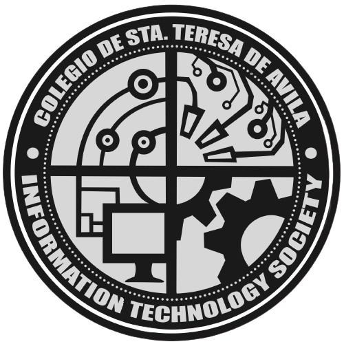

This diary captures my college journey—the highlights, the fun experiences, and the moments that shaped me as an IT student.
My first day of college was both exciting and nerve-wracking as I stepped into a completely new environment. Everything felt unfamiliar—the classroom, the seats, and the many new faces and voices. There was pressure in getting to know people, but I pushed through, made some friends along the way, and eventually moved forward as we went our separate paths.
The pre-lim exams were a major challenge for me since it was my first experience with college-level examinations. I studied hard and did my best to stay focused throughout the preparation. One of the most memorable challenges was taking the exam for Sir Mac’s subject—he was the strictest and most choleric professor I have ever encountered. But by God’s grace, I was able to get through my first exam in his subject successfully.
During midterms, I began to feel the pressure building up, but I was able to get through it with the support of the friends I met along the way. Together, we overcame the challenges and stress of that period. The bond we formed became a strong source of reassurance, knowing that each of us was determined to pass the term. We supported one another whenever someone was struggling, which made the experience more bearable and meaningful.
During finals, the real pressure hit. My still-adjusting self went through one of the most overwhelming phases of my life. It was also during this time that my goal of making the Dean’s List was broken, as I fell short in the final grade computation—one of my major subjects didn’t meet the required mark. Even so, with the support of my friends and family, I was able to get back on my feet and continue my journey as a Junior IT student.
At the start of the second semester, I began to take a step back from everything. I stopped putting too much pressure on myself to achieve high grades, and it felt like I had lost my drive to push harder and compete. I also experienced losing some friends as we went our separate ways—some were unable to continue due to financial difficulties, while others shifted sections to explore new environments and opportunities.
During midterms, I met more people and made new friends. It felt like my circle was growing, and I started enjoying college life more. Having friends around made studying and surviving exams easier because we could help each other. It also reminded me that college is not only about grades but also about the connections you build.
The finals of the first semester were the most exciting part of my first year because of IT Week. Even though I didn’t participate in the competitions, I made new friends, supported them, and cheered for them as they took part in the events.
The prelims in the first semester of my second year were also difficult. Since I was placed in a new section, I had to meet and adjust to new people. It wasn’t the same as in my first year—I was truly pushed out of my comfort zone as an IT student. However, with God’s grace, I was able to grow and adapt to the new environment. As they say, there is no growth in the comfort zone, and real improvement often happens during the most uncomfortable phases of our lives.
During the midterms of my first semester in second year, things were still not easy. I could really feel the pressure of being a college student, especially as my sense of purpose started to shift. However, with God and the right people by my side, there was no challenge that could keep me down.
Finals were really stressful, as always. However, knowing that the Lord is with me, I was able to push through. In moments when I felt like giving up, God helped me focus on His promises rather than the challenges I was facing—both as a student and in life.
My prelims in the second semester were really difficult because I had already started working. I struggled to balance serving the Lord and being a working student. At the same time, I carry the dream of easing my parents’ burden and being able to finance my own studies.
Midterms were especially hard for me, as my purpose and vision completely shifted. Still, I did my best to stay committed to my life as a student. During moments when I felt like giving up, I held on to the Lord’s promises, which helped me keep pushing through despite the difficulties. I was also strengthened by the support of my friends and classmates, who stood by me and supported me in every decision I made.
Lastly, the finals—I’m still holding on. Even though I’ve faced some of the hardest challenges as a student, God has not allowed me to fall during the toughest times.
First of all, I am very thankful because God has given me a life full of meaningful challenges that have helped me grow as a student. I’m also grateful for the friends I’ve made along the way—especially those who believed in me during the times when I felt lost. Some might think, “You keep repeating your gratitude to God,” but I want to say that everything we have in life comes from Him. No good deed or words can ever compare to His glory and goodness. That’s why, no matter what we go through or face, we should learn to look up and remember who has been with us from the very beginning. Even in the moments when no one else understands what we’re going through, Jesus has always been there with us.
College life is far from easy, especially as an IT student. It comes with stressful exams, sleepless nights, and moments when giving up feels like the only option. Still, it also brings achievements, friendships, and memories that make all the hardships meaningful. I may have faced many struggles, but I am still here, continuing to move forward. As written in Nehemiah 8:10, *“The joy of the Lord is your strength,”* and in Philippians 4:13, *“I can do all things through Christ who strengthens me.”*